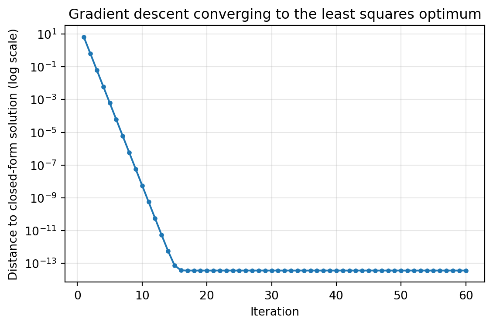

Linear regression is the workhorse of applied statistics and machine learning. It is simple enough to admit a closed form solution, rich enough to motivate optimization and probabilistic modeling, and ubiquitous enough that almost every more advanced method can be understood as a generalization of it. This chapter develops linear regression from four complementary vantage points: the model itself, the least squares objective and its solution through the normal equations, the geometry of projection, the gradient descent algorithm, and the probabilistic view in which least squares emerges from a Gaussian noise assumption. We close with the practical matter of interpreting fitted coefficients.
85.1 1. The Model
85.1.1 1.1 Setup and notation
We observe a dataset of \(n\) examples, each pairing an input vector with a scalar target. The \(i\)-th input is \(\mathbf{x}_i \in \mathbb{R}^d\) and the \(i\)-th target is \(y_i \in \mathbb{R}\). Linear regression posits that the target is, up to noise, a linear function of the inputs:
The scalar \(w_0\) is the intercept or bias, and \(w_1, \ldots, w_d\) are the slopes or weights. It is convenient to absorb the intercept into the weight vector by appending a constant feature equal to one to every input. With \(\tilde{\mathbf{x}}_i = (1, x_{i1}, \ldots, x_{id})^\top\) and \(\mathbf{w} = (w_0, w_1, \ldots, w_d)^\top\), the model becomes the inner product
Stacking the augmented inputs as rows of a design matrix \(\mathbf{X} \in \mathbb{R}^{n \times (d+1)}\) and the targets into a vector \(\mathbf{y} \in \mathbb{R}^n\), the predictions for all examples are written compactly as \(\hat{\mathbf{y}} = \mathbf{X}\mathbf{w}\). From here on we drop the tilde and assume \(\mathbf{X}\) already contains the column of ones.
85.1.2 1.2 What linear means
A common point of confusion is that linearity refers to linearity in the parameters \(\mathbf{w}\), not in the raw inputs. We are free to expand each input through a fixed feature map \(\phi(\mathbf{x})\) that may include polynomial terms, logarithms, interactions, or basis functions, and then fit a model that is linear in those features. For example, fitting \(y \approx w_0 + w_1 x + w_2 x^2\) is still linear regression, because the unknowns enter linearly even though the relationship between \(y\) and \(x\) is curved. This flexibility is why linear regression underpins so many richer methods: replace the features and the same machinery applies unchanged.
85.2 2. Least Squares
85.2.1 2.1 The objective
To fit the model we must choose \(\mathbf{w}\). The least squares principle selects the weights that minimize the sum of squared residuals, where the residual of example \(i\) is \(r_i = y_i - \mathbf{w}^\top \mathbf{x}_i\). The objective is
Squaring the residuals has several consequences. It penalizes large errors heavily, it makes the objective smooth and differentiable everywhere, and, as we will see, it leads to a unique closed form solution under mild conditions. It also has a clean probabilistic justification under Gaussian noise, developed in Section 5.
85.2.2 2.2 Why squared error and not something else
One could instead minimize the sum of absolute residuals, which yields least absolute deviations regression and is more robust to outliers. The squared loss is preferred in the foundational treatment because it is everywhere differentiable, it corresponds to projection in Euclidean geometry, and it matches maximum likelihood estimation under Gaussian noise. The price is sensitivity to outliers, since a single large residual contributes its square to the total. Practitioners should keep this trade off in mind, but for now we develop the squared loss in full.
85.3 3. The Normal Equations and Geometric Projection
85.3.1 3.1 Deriving the normal equations
Because \(J(\mathbf{w})\) is a convex quadratic in \(\mathbf{w}\), its unique minimizer occurs where the gradient vanishes. Expanding the objective,
The matrix \(\mathbf{X}^{+} = (\mathbf{X}^\top \mathbf{X})^{-1} \mathbf{X}^\top\) is the Moore Penrose pseudoinverse of \(\mathbf{X}\), and the fitted weights are simply \(\mathbf{w}^\star = \mathbf{X}^{+}\mathbf{y}\).
85.3.2 3.2 The projection interpretation
The normal equations have a beautiful geometric reading. The vector of predictions \(\hat{\mathbf{y}} = \mathbf{X}\mathbf{w}\) lives in the column space of \(\mathbf{X}\), that is, the set of all linear combinations of the feature columns. The target vector \(\mathbf{y}\) generally does not lie in this subspace. Least squares asks for the point in the column space closest to \(\mathbf{y}\) in Euclidean distance, which is precisely the orthogonal projection of \(\mathbf{y}\) onto that subspace.
Orthogonality is the key. The residual \(\mathbf{r} = \mathbf{y} - \hat{\mathbf{y}}\) at the optimum must be perpendicular to every feature column, because if it had any component along a column we could reduce the error by moving \(\hat{\mathbf{y}}\) in that direction. Perpendicularity to all columns is exactly the condition
which rearranges into the normal equations. The fitted values can be written \(\hat{\mathbf{y}} = \mathbf{H}\mathbf{y}\) with the hat matrix \(\mathbf{H} = \mathbf{X}(\mathbf{X}^\top \mathbf{X})^{-1}\mathbf{X}^\top\), an orthogonal projector onto the column space. It satisfies \(\mathbf{H} = \mathbf{H}^\top\) and \(\mathbf{H}^2 = \mathbf{H}\), the defining properties of a projection.
85.3.3 3.3 Numerical practice
Forming and inverting \(\mathbf{X}^\top \mathbf{X}\) directly is numerically fragile, because the condition number of the Gram matrix is the square of the condition number of \(\mathbf{X}\). Small errors in nearly collinear features can blow up. In practice one solves the least squares problem through a QR decomposition or a singular value decomposition of \(\mathbf{X}\), which work with \(\mathbf{X}\) directly and are far more stable. The pseudoinverse formula remains the right way to think about the solution, but it is rarely the right way to compute it.
Code
# Prefer a stable solver over an explicit matrix inverseimport numpy as npfrom sklearn.datasets import make_regressionX_raw, y = make_regression(n_samples=200, n_features=3, noise=10.0, random_state=0)n = X_raw.shape[0]X = np.column_stack([np.ones(n), X_raw]) # absorb intercept as a column of ones# Fragile explicit-inverse solutionw_inv = np.linalg.inv(X.T @ X) @ X.T @ y# Stable QR or SVD based solverw_lstsq, *_ = np.linalg.lstsq(X, y, rcond=None)print("weights (explicit inverse):", np.round(w_inv, 4))print("weights (lstsq, stable) :", np.round(w_lstsq, 4))print("max abs difference :", np.max(np.abs(w_inv - w_lstsq)))
If the feature columns are linearly dependent, for instance when two features are perfectly correlated or when \(d + 1 > n\), then \(\mathbf{X}^\top \mathbf{X}\) is not invertible and infinitely many weight vectors achieve the same minimal error. The predictions \(\hat{\mathbf{y}}\) remain unique because the projection is unique, but the coefficients that produce them are not. The pseudoinverse, defined through the singular value decomposition, selects the minimum norm solution among all minimizers. Regularization, discussed in later chapters, is the standard remedy: adding a ridge penalty \(\lambda \lVert \mathbf{w} \rVert_2^2\) replaces \(\mathbf{X}^\top \mathbf{X}\) with \(\mathbf{X}^\top \mathbf{X} + \lambda \mathbf{I}\), which is always invertible for \(\lambda > 0\).
85.4 4. The Gradient Descent Solution
85.4.1 4.1 Why iterate when a closed form exists
The normal equations give an exact answer, so why bother with an iterative method? The reason is scale. Computing \((\mathbf{X}^\top \mathbf{X})^{-1}\) costs on the order of \(d^3\) operations and requires assembling a \((d+1) \times (d+1)\) matrix, which is impractical when \(d\) reaches the hundreds of thousands or when the data arrive in a stream and cannot all be held in memory. Gradient descent trades exactness for scalability and generalizes directly to models that have no closed form solution at all, such as logistic regression and neural networks.
85.4.2 4.2 The update rule
Gradient descent moves the weights in the direction of steepest decrease of the objective. Using the mean squared error as a scaled objective,
# Batch gradient descent converging to the closed-form least squares solutionimport numpy as npimport matplotlib.pyplot as pltfrom sklearn.datasets import make_regressionX_raw, y = make_regression(n_samples=300, n_features=2, noise=8.0, random_state=1)n = X_raw.shape[0]# Standardize features so the objective is well conditionedX_std = (X_raw - X_raw.mean(axis=0)) / X_raw.std(axis=0)X = np.column_stack([np.ones(n), X_std])w_star, *_ = np.linalg.lstsq(X, y, rcond=None) # closed-form targeteta =0.5num_iters =60w = np.zeros(X.shape[1])errors = []for t inrange(num_iters): grad =-(2.0/ n) * X.T @ (y - X @ w) w = w - eta * grad errors.append(np.linalg.norm(w - w_star))fig, ax = plt.subplots(figsize=(6, 4))ax.semilogy(range(1, num_iters +1), errors, marker="o", markersize=3)ax.set_xlabel("Iteration")ax.set_ylabel("Distance to closed-form solution (log scale)")ax.set_title("Gradient descent converging to the least squares optimum")ax.grid(True, alpha=0.3)plt.tight_layout()plt.show()

85.4.3 4.3 Convergence and the learning rate
Because the least squares objective is convex with a constant Hessian \(\mathbf{H}_J = \frac{2}{n}\mathbf{X}^\top \mathbf{X}\), gradient descent converges to the global minimum provided the learning rate is small enough. The relevant threshold involves the largest eigenvalue \(\lambda_{\max}\) of the Hessian: convergence requires \(\eta < 2 / \lambda_{\max}\). If \(\eta\) is too large the iterates oscillate or diverge; if it is too small convergence is needlessly slow.
The speed of convergence is governed by the condition number of \(\mathbf{X}^\top \mathbf{X}\), the ratio \(\lambda_{\max} / \lambda_{\min}\). A large condition number, caused by features on very different scales or by collinearity, produces a stretched, valley shaped objective that gradient descent traverses slowly. This is why standardizing features to comparable scales, typically zero mean and unit variance, is so important in practice. It reshapes the objective toward a more spherical bowl and dramatically accelerates convergence.
85.4.4 4.4 Stochastic and mini batch variants
For large \(n\), computing the full gradient over every example at each step is expensive. Stochastic gradient descent estimates the gradient from a single example, and mini batch gradient descent uses a small random subset. These estimates are noisy but unbiased, and they allow many more updates per pass through the data. The noise even confers a mild regularizing effect. Mini batch gradient descent, with a batch size in the dozens or hundreds, is the standard choice in modern machine learning because it balances gradient quality against computational throughput and maps well onto vectorized hardware.
85.5 5. The Probabilistic View
85.5.1 5.1 The Gaussian noise model
So far least squares has been a geometric and computational recipe. The probabilistic view explains why squared error is a principled choice rather than an arbitrary one. We model each target as a linear function of the inputs corrupted by independent additive noise:
with the noise terms independent across examples. Equivalently, conditioned on the input, the target is Gaussian with mean given by the linear predictor:
85.5.2 5.2 Maximum likelihood equals least squares
Treating the weights as fixed unknowns, the likelihood of the observed data is the product of the per example densities. Because the logarithm is monotone, we maximize the log likelihood instead:
The first term does not depend on \(\mathbf{w}\), and the second is proportional to the negative sum of squared residuals. Maximizing the log likelihood over \(\mathbf{w}\) is therefore identical to minimizing the least squares objective. The maximum likelihood estimate of the weights is exactly \(\mathbf{w}^\star = (\mathbf{X}^\top \mathbf{X})^{-1}\mathbf{X}^\top \mathbf{y}\). This equivalence is the deep justification for squared error: it is the right loss precisely when the noise is Gaussian with constant variance.
85.5.3 5.3 Estimating the noise variance and quantifying uncertainty
The probabilistic view also delivers an estimate of the noise level. Maximizing the log likelihood over \(\sigma^2\) gives the average squared residual, \(\hat{\sigma}^2 = \frac{1}{n}\sum_i r_i^2\). In classical statistics one divides by \(n - d - 1\) rather than \(n\) to obtain an unbiased estimate that accounts for the degrees of freedom consumed in fitting \(d + 1\) parameters. With a noise variance in hand, and under the Gaussian model, the sampling distribution of the estimated weights is itself Gaussian,
which is the basis for standard errors, confidence intervals, and hypothesis tests on individual coefficients. The diagonal entries of \(\sigma^2 (\mathbf{X}^\top \mathbf{X})^{-1}\) give the variances of the individual weight estimates.
85.5.4 5.4 From maximum likelihood to maximum a posteriori
If we place a zero mean Gaussian prior on the weights, \(\mathbf{w} \sim \mathcal{N}(0, \tau^2 \mathbf{I})\), and seek the most probable weights given the data, the log posterior adds a penalty proportional to \(\lVert \mathbf{w} \rVert_2^2\) to the least squares objective. The maximum a posteriori estimate then coincides with ridge regression, with the regularization strength \(\lambda = \sigma^2 / \tau^2\) set by the ratio of noise variance to prior variance. This connects the geometric remedy for singular Gram matrices in Section 3.4 to a coherent probabilistic story: regularization is a prior belief that weights should be small.
85.6 6. Interpretation of Coefficients
85.6.1 6.1 The meaning of a slope
Each fitted weight \(w_j\) has a precise interpretation. Holding all other features fixed, increasing feature \(j\) by one unit changes the predicted target by \(w_j\) units. This ceteris paribus reading is essential and easy to misstate. The coefficient is a partial effect, the influence of one feature with the others held constant, not the raw association between that feature and the target. The intercept \(w_0\) is the predicted target when all features equal zero, which may or may not be a meaningful operating point depending on the data.
85.6.2 6.2 Scale, standardization, and comparability
Raw coefficients carry the units of the target divided by the units of their feature, so their magnitudes are not directly comparable. A coefficient on income measured in dollars will look tiny next to a coefficient on a feature measured in single digits, even if income is the more important predictor. Standardizing features before fitting, so that each has unit variance, yields standardized coefficients that express the change in target per one standard deviation change in the feature. These are comparable across features and are the right quantities to inspect when ranking variable importance within a linear model.
85.6.3 6.3 Collinearity and unstable coefficients
When features are highly correlated, the partial effect interpretation becomes treacherous. The model cannot cleanly separate the contributions of correlated features, so individual coefficients can swing wildly, take implausible signs, or carry enormous standard errors, even while the joint prediction remains accurate. The variance inflation factor quantifies this: it measures how much the variance of a coefficient is inflated by collinearity with the other features. High collinearity is a signal to combine or drop redundant features, or to regularize, before reading too much into any single weight.
85.6.4 6.4 Correlation, causation, and confounding
The sharpest caution concerns causal claims. A nonzero coefficient describes a conditional association in the observed data; it does not by itself license the statement that intervening on the feature will change the outcome. Omitted confounders, reverse causation, and selection effects can all produce coefficients that mislead when read causally. The ceteris paribus phrasing holds only with respect to the features actually included in the model, never with respect to variables left out. Treating regression coefficients as causal effects requires either a randomized experiment or explicit causal assumptions encoded in a model of the data generating process. Used carefully, with these caveats in view, the fitted coefficients of a linear regression remain among the most transparent and useful summaries in all of applied modeling.
85.7 References
Hastie, T., Tibshirani, R., and Friedman, J. The Elements of Statistical Learning, 2nd edition. https://hastie.su.domains/ElemStatLearn/
Bishop, C. M. Pattern Recognition and Machine Learning. https://www.microsoft.com/en-us/research/publication/pattern-recognition-machine-learning/
Strang, G. Introduction to Linear Algebra, projection and least squares chapters. https://math.mit.edu/~gs/linearalgebra/
Boyd, S., and Vandenberghe, L. Convex Optimization. https://web.stanford.edu/~boyd/cvxbook/
James, G., Witten, D., Hastie, T., and Tibshirani, R. An Introduction to Statistical Learning. https://www.statlearning.com/
Murphy, K. P. Probabilistic Machine Learning: An Introduction. https://probml.github.io/pml-book/book1.html
Seber, G. A. F., and Lee, A. J. Linear Regression Analysis, 2nd edition. https://onlinelibrary.wiley.com/doi/book/10.1002/9780471722199
Source Code
# Linear Regression FoundationsLinear regression is the workhorse of applied statistics and machine learning. It is simple enough to admit a closed form solution, rich enough to motivate optimization and probabilistic modeling, and ubiquitous enough that almost every more advanced method can be understood as a generalization of it. This chapter develops linear regression from four complementary vantage points: the model itself, the least squares objective and its solution through the normal equations, the geometry of projection, the gradient descent algorithm, and the probabilistic view in which least squares emerges from a Gaussian noise assumption. We close with the practical matter of interpreting fitted coefficients.## 1. The Model### 1.1 Setup and notationWe observe a dataset of $n$ examples, each pairing an input vector with a scalar target. The $i$-th input is $\mathbf{x}_i \in \mathbb{R}^d$ and the $i$-th target is $y_i \in \mathbb{R}$. Linear regression posits that the target is, up to noise, a linear function of the inputs:$$y_i \approx w_0 + w_1 x_{i1} + w_2 x_{i2} + \cdots + w_d x_{id}.$$The scalar $w_0$ is the intercept or bias, and $w_1, \ldots, w_d$ are the slopes or weights. It is convenient to absorb the intercept into the weight vector by appending a constant feature equal to one to every input. With $\tilde{\mathbf{x}}_i = (1, x_{i1}, \ldots, x_{id})^\top$ and $\mathbf{w} = (w_0, w_1, \ldots, w_d)^\top$, the model becomes the inner product$$\hat{y}_i = \mathbf{w}^\top \tilde{\mathbf{x}}_i .$$Stacking the augmented inputs as rows of a design matrix $\mathbf{X} \in \mathbb{R}^{n \times (d+1)}$ and the targets into a vector $\mathbf{y} \in \mathbb{R}^n$, the predictions for all examples are written compactly as $\hat{\mathbf{y}} = \mathbf{X}\mathbf{w}$. From here on we drop the tilde and assume $\mathbf{X}$ already contains the column of ones.### 1.2 What linear meansA common point of confusion is that linearity refers to linearity in the parameters $\mathbf{w}$, not in the raw inputs. We are free to expand each input through a fixed feature map $\phi(\mathbf{x})$ that may include polynomial terms, logarithms, interactions, or basis functions, and then fit a model that is linear in those features. For example, fitting $y \approx w_0 + w_1 x + w_2 x^2$ is still linear regression, because the unknowns enter linearly even though the relationship between $y$ and $x$ is curved. This flexibility is why linear regression underpins so many richer methods: replace the features and the same machinery applies unchanged.## 2. Least Squares### 2.1 The objectiveTo fit the model we must choose $\mathbf{w}$. The least squares principle selects the weights that minimize the sum of squared residuals, where the residual of example $i$ is $r_i = y_i - \mathbf{w}^\top \mathbf{x}_i$. The objective is$$J(\mathbf{w}) = \sum_{i=1}^{n} \left( y_i - \mathbf{w}^\top \mathbf{x}_i \right)^2 = \lVert \mathbf{y} - \mathbf{X}\mathbf{w} \rVert_2^2 .$$Squaring the residuals has several consequences. It penalizes large errors heavily, it makes the objective smooth and differentiable everywhere, and, as we will see, it leads to a unique closed form solution under mild conditions. It also has a clean probabilistic justification under Gaussian noise, developed in Section 5.### 2.2 Why squared error and not something elseOne could instead minimize the sum of absolute residuals, which yields least absolute deviations regression and is more robust to outliers. The squared loss is preferred in the foundational treatment because it is everywhere differentiable, it corresponds to projection in Euclidean geometry, and it matches maximum likelihood estimation under Gaussian noise. The price is sensitivity to outliers, since a single large residual contributes its square to the total. Practitioners should keep this trade off in mind, but for now we develop the squared loss in full.## 3. The Normal Equations and Geometric Projection### 3.1 Deriving the normal equationsBecause $J(\mathbf{w})$ is a convex quadratic in $\mathbf{w}$, its unique minimizer occurs where the gradient vanishes. Expanding the objective,$$J(\mathbf{w}) = \mathbf{y}^\top \mathbf{y} - 2 \mathbf{w}^\top \mathbf{X}^\top \mathbf{y} + \mathbf{w}^\top \mathbf{X}^\top \mathbf{X} \mathbf{w}.$$Differentiating with respect to $\mathbf{w}$ gives$$\nabla_{\mathbf{w}} J(\mathbf{w}) = -2 \mathbf{X}^\top \mathbf{y} + 2 \mathbf{X}^\top \mathbf{X} \mathbf{w}.$$Setting the gradient to zero yields the normal equations,$$\mathbf{X}^\top \mathbf{X}\, \mathbf{w} = \mathbf{X}^\top \mathbf{y}.$$When the columns of $\mathbf{X}$ are linearly independent, the Gram matrix $\mathbf{X}^\top \mathbf{X}$ is invertible and the solution is$$\mathbf{w}^\star = \left( \mathbf{X}^\top \mathbf{X} \right)^{-1} \mathbf{X}^\top \mathbf{y}.$$The matrix $\mathbf{X}^{+} = (\mathbf{X}^\top \mathbf{X})^{-1} \mathbf{X}^\top$ is the Moore Penrose pseudoinverse of $\mathbf{X}$, and the fitted weights are simply $\mathbf{w}^\star = \mathbf{X}^{+}\mathbf{y}$.### 3.2 The projection interpretationThe normal equations have a beautiful geometric reading. The vector of predictions $\hat{\mathbf{y}} = \mathbf{X}\mathbf{w}$ lives in the column space of $\mathbf{X}$, that is, the set of all linear combinations of the feature columns. The target vector $\mathbf{y}$ generally does not lie in this subspace. Least squares asks for the point in the column space closest to $\mathbf{y}$ in Euclidean distance, which is precisely the orthogonal projection of $\mathbf{y}$ onto that subspace.Orthogonality is the key. The residual $\mathbf{r} = \mathbf{y} - \hat{\mathbf{y}}$ at the optimum must be perpendicular to every feature column, because if it had any component along a column we could reduce the error by moving $\hat{\mathbf{y}}$ in that direction. Perpendicularity to all columns is exactly the condition$$\mathbf{X}^\top \mathbf{r} = \mathbf{X}^\top (\mathbf{y} - \mathbf{X}\mathbf{w}) = \mathbf{0},$$which rearranges into the normal equations. The fitted values can be written $\hat{\mathbf{y}} = \mathbf{H}\mathbf{y}$ with the hat matrix $\mathbf{H} = \mathbf{X}(\mathbf{X}^\top \mathbf{X})^{-1}\mathbf{X}^\top$, an orthogonal projector onto the column space. It satisfies $\mathbf{H} = \mathbf{H}^\top$ and $\mathbf{H}^2 = \mathbf{H}$, the defining properties of a projection.### 3.3 Numerical practiceForming and inverting $\mathbf{X}^\top \mathbf{X}$ directly is numerically fragile, because the condition number of the Gram matrix is the square of the condition number of $\mathbf{X}$. Small errors in nearly collinear features can blow up. In practice one solves the least squares problem through a QR decomposition or a singular value decomposition of $\mathbf{X}$, which work with $\mathbf{X}$ directly and are far more stable. The pseudoinverse formula remains the right way to think about the solution, but it is rarely the right way to compute it.```{python}# Prefer a stable solver over an explicit matrix inverseimport numpy as npfrom sklearn.datasets import make_regressionX_raw, y = make_regression(n_samples=200, n_features=3, noise=10.0, random_state=0)n = X_raw.shape[0]X = np.column_stack([np.ones(n), X_raw]) # absorb intercept as a column of ones# Fragile explicit-inverse solutionw_inv = np.linalg.inv(X.T @ X) @ X.T @ y# Stable QR or SVD based solverw_lstsq, *_ = np.linalg.lstsq(X, y, rcond=None)print("weights (explicit inverse):", np.round(w_inv, 4))print("weights (lstsq, stable) :", np.round(w_lstsq, 4))print("max abs difference :", np.max(np.abs(w_inv - w_lstsq)))```### 3.4 When the Gram matrix is singularIf the feature columns are linearly dependent, for instance when two features are perfectly correlated or when $d + 1 > n$, then $\mathbf{X}^\top \mathbf{X}$ is not invertible and infinitely many weight vectors achieve the same minimal error. The predictions $\hat{\mathbf{y}}$ remain unique because the projection is unique, but the coefficients that produce them are not. The pseudoinverse, defined through the singular value decomposition, selects the minimum norm solution among all minimizers. Regularization, discussed in later chapters, is the standard remedy: adding a ridge penalty $\lambda \lVert \mathbf{w} \rVert_2^2$ replaces $\mathbf{X}^\top \mathbf{X}$ with $\mathbf{X}^\top \mathbf{X} + \lambda \mathbf{I}$, which is always invertible for $\lambda > 0$.## 4. The Gradient Descent Solution### 4.1 Why iterate when a closed form existsThe normal equations give an exact answer, so why bother with an iterative method? The reason is scale. Computing $(\mathbf{X}^\top \mathbf{X})^{-1}$ costs on the order of $d^3$ operations and requires assembling a $(d+1) \times (d+1)$ matrix, which is impractical when $d$ reaches the hundreds of thousands or when the data arrive in a stream and cannot all be held in memory. Gradient descent trades exactness for scalability and generalizes directly to models that have no closed form solution at all, such as logistic regression and neural networks.### 4.2 The update ruleGradient descent moves the weights in the direction of steepest decrease of the objective. Using the mean squared error as a scaled objective,$$J(\mathbf{w}) = \frac{1}{n} \lVert \mathbf{y} - \mathbf{X}\mathbf{w} \rVert_2^2, \qquad\nabla_{\mathbf{w}} J(\mathbf{w}) = -\frac{2}{n}\, \mathbf{X}^\top (\mathbf{y} - \mathbf{X}\mathbf{w}),$$we update the weights with a step size, or learning rate, $\eta > 0$:$$\mathbf{w}^{(t+1)} = \mathbf{w}^{(t)} - \eta\, \nabla_{\mathbf{w}} J\!\left(\mathbf{w}^{(t)}\right).$$```{python}# Batch gradient descent converging to the closed-form least squares solutionimport numpy as npimport matplotlib.pyplot as pltfrom sklearn.datasets import make_regressionX_raw, y = make_regression(n_samples=300, n_features=2, noise=8.0, random_state=1)n = X_raw.shape[0]# Standardize features so the objective is well conditionedX_std = (X_raw - X_raw.mean(axis=0)) / X_raw.std(axis=0)X = np.column_stack([np.ones(n), X_std])w_star, *_ = np.linalg.lstsq(X, y, rcond=None) # closed-form targeteta =0.5num_iters =60w = np.zeros(X.shape[1])errors = []for t inrange(num_iters): grad =-(2.0/ n) * X.T @ (y - X @ w) w = w - eta * grad errors.append(np.linalg.norm(w - w_star))fig, ax = plt.subplots(figsize=(6, 4))ax.semilogy(range(1, num_iters +1), errors, marker="o", markersize=3)ax.set_xlabel("Iteration")ax.set_ylabel("Distance to closed-form solution (log scale)")ax.set_title("Gradient descent converging to the least squares optimum")ax.grid(True, alpha=0.3)plt.tight_layout()plt.show()```### 4.3 Convergence and the learning rateBecause the least squares objective is convex with a constant Hessian $\mathbf{H}_J = \frac{2}{n}\mathbf{X}^\top \mathbf{X}$, gradient descent converges to the global minimum provided the learning rate is small enough. The relevant threshold involves the largest eigenvalue $\lambda_{\max}$ of the Hessian: convergence requires $\eta < 2 / \lambda_{\max}$. If $\eta$ is too large the iterates oscillate or diverge; if it is too small convergence is needlessly slow.The speed of convergence is governed by the condition number of $\mathbf{X}^\top \mathbf{X}$, the ratio $\lambda_{\max} / \lambda_{\min}$. A large condition number, caused by features on very different scales or by collinearity, produces a stretched, valley shaped objective that gradient descent traverses slowly. This is why standardizing features to comparable scales, typically zero mean and unit variance, is so important in practice. It reshapes the objective toward a more spherical bowl and dramatically accelerates convergence.### 4.4 Stochastic and mini batch variantsFor large $n$, computing the full gradient over every example at each step is expensive. Stochastic gradient descent estimates the gradient from a single example, and mini batch gradient descent uses a small random subset. These estimates are noisy but unbiased, and they allow many more updates per pass through the data. The noise even confers a mild regularizing effect. Mini batch gradient descent, with a batch size in the dozens or hundreds, is the standard choice in modern machine learning because it balances gradient quality against computational throughput and maps well onto vectorized hardware.## 5. The Probabilistic View### 5.1 The Gaussian noise modelSo far least squares has been a geometric and computational recipe. The probabilistic view explains why squared error is a principled choice rather than an arbitrary one. We model each target as a linear function of the inputs corrupted by independent additive noise:$$y_i = \mathbf{w}^\top \mathbf{x}_i + \varepsilon_i, \qquad \varepsilon_i \sim \mathcal{N}(0, \sigma^2),$$with the noise terms independent across examples. Equivalently, conditioned on the input, the target is Gaussian with mean given by the linear predictor:$$p(y_i \mid \mathbf{x}_i, \mathbf{w}) = \frac{1}{\sqrt{2\pi\sigma^2}} \exp\!\left( -\frac{(y_i - \mathbf{w}^\top \mathbf{x}_i)^2}{2\sigma^2} \right).$$### 5.2 Maximum likelihood equals least squaresTreating the weights as fixed unknowns, the likelihood of the observed data is the product of the per example densities. Because the logarithm is monotone, we maximize the log likelihood instead:$$\log p(\mathbf{y} \mid \mathbf{X}, \mathbf{w}) = -\frac{n}{2}\log(2\pi\sigma^2) - \frac{1}{2\sigma^2} \sum_{i=1}^{n} \left( y_i - \mathbf{w}^\top \mathbf{x}_i \right)^2.$$The first term does not depend on $\mathbf{w}$, and the second is proportional to the negative sum of squared residuals. Maximizing the log likelihood over $\mathbf{w}$ is therefore identical to minimizing the least squares objective. The maximum likelihood estimate of the weights is exactly $\mathbf{w}^\star = (\mathbf{X}^\top \mathbf{X})^{-1}\mathbf{X}^\top \mathbf{y}$. This equivalence is the deep justification for squared error: it is the right loss precisely when the noise is Gaussian with constant variance.### 5.3 Estimating the noise variance and quantifying uncertaintyThe probabilistic view also delivers an estimate of the noise level. Maximizing the log likelihood over $\sigma^2$ gives the average squared residual, $\hat{\sigma}^2 = \frac{1}{n}\sum_i r_i^2$. In classical statistics one divides by $n - d - 1$ rather than $n$ to obtain an unbiased estimate that accounts for the degrees of freedom consumed in fitting $d + 1$ parameters. With a noise variance in hand, and under the Gaussian model, the sampling distribution of the estimated weights is itself Gaussian,$$\hat{\mathbf{w}} \sim \mathcal{N}\!\left( \mathbf{w}, \; \sigma^2 (\mathbf{X}^\top \mathbf{X})^{-1} \right),$$which is the basis for standard errors, confidence intervals, and hypothesis tests on individual coefficients. The diagonal entries of $\sigma^2 (\mathbf{X}^\top \mathbf{X})^{-1}$ give the variances of the individual weight estimates.### 5.4 From maximum likelihood to maximum a posterioriIf we place a zero mean Gaussian prior on the weights, $\mathbf{w} \sim \mathcal{N}(0, \tau^2 \mathbf{I})$, and seek the most probable weights given the data, the log posterior adds a penalty proportional to $\lVert \mathbf{w} \rVert_2^2$ to the least squares objective. The maximum a posteriori estimate then coincides with ridge regression, with the regularization strength $\lambda = \sigma^2 / \tau^2$ set by the ratio of noise variance to prior variance. This connects the geometric remedy for singular Gram matrices in Section 3.4 to a coherent probabilistic story: regularization is a prior belief that weights should be small.## 6. Interpretation of Coefficients### 6.1 The meaning of a slopeEach fitted weight $w_j$ has a precise interpretation. Holding all other features fixed, increasing feature $j$ by one unit changes the predicted target by $w_j$ units. This ceteris paribus reading is essential and easy to misstate. The coefficient is a partial effect, the influence of one feature with the others held constant, not the raw association between that feature and the target. The intercept $w_0$ is the predicted target when all features equal zero, which may or may not be a meaningful operating point depending on the data.### 6.2 Scale, standardization, and comparabilityRaw coefficients carry the units of the target divided by the units of their feature, so their magnitudes are not directly comparable. A coefficient on income measured in dollars will look tiny next to a coefficient on a feature measured in single digits, even if income is the more important predictor. Standardizing features before fitting, so that each has unit variance, yields standardized coefficients that express the change in target per one standard deviation change in the feature. These are comparable across features and are the right quantities to inspect when ranking variable importance within a linear model.### 6.3 Collinearity and unstable coefficientsWhen features are highly correlated, the partial effect interpretation becomes treacherous. The model cannot cleanly separate the contributions of correlated features, so individual coefficients can swing wildly, take implausible signs, or carry enormous standard errors, even while the joint prediction remains accurate. The variance inflation factor quantifies this: it measures how much the variance of a coefficient is inflated by collinearity with the other features. High collinearity is a signal to combine or drop redundant features, or to regularize, before reading too much into any single weight.### 6.4 Correlation, causation, and confoundingThe sharpest caution concerns causal claims. A nonzero coefficient describes a conditional association in the observed data; it does not by itself license the statement that intervening on the feature will change the outcome. Omitted confounders, reverse causation, and selection effects can all produce coefficients that mislead when read causally. The ceteris paribus phrasing holds only with respect to the features actually included in the model, never with respect to variables left out. Treating regression coefficients as causal effects requires either a randomized experiment or explicit causal assumptions encoded in a model of the data generating process. Used carefully, with these caveats in view, the fitted coefficients of a linear regression remain among the most transparent and useful summaries in all of applied modeling.## References1. Hastie, T., Tibshirani, R., and Friedman, J. The Elements of Statistical Learning, 2nd edition. https://hastie.su.domains/ElemStatLearn/2. Bishop, C. M. Pattern Recognition and Machine Learning. https://www.microsoft.com/en-us/research/publication/pattern-recognition-machine-learning/3. Strang, G. Introduction to Linear Algebra, projection and least squares chapters. https://math.mit.edu/~gs/linearalgebra/4. Boyd, S., and Vandenberghe, L. Convex Optimization. https://web.stanford.edu/~boyd/cvxbook/5. James, G., Witten, D., Hastie, T., and Tibshirani, R. An Introduction to Statistical Learning. https://www.statlearning.com/6. Murphy, K. P. Probabilistic Machine Learning: An Introduction. https://probml.github.io/pml-book/book1.html7. Seber, G. A. F., and Lee, A. J. Linear Regression Analysis, 2nd edition. https://onlinelibrary.wiley.com/doi/book/10.1002/9780471722199